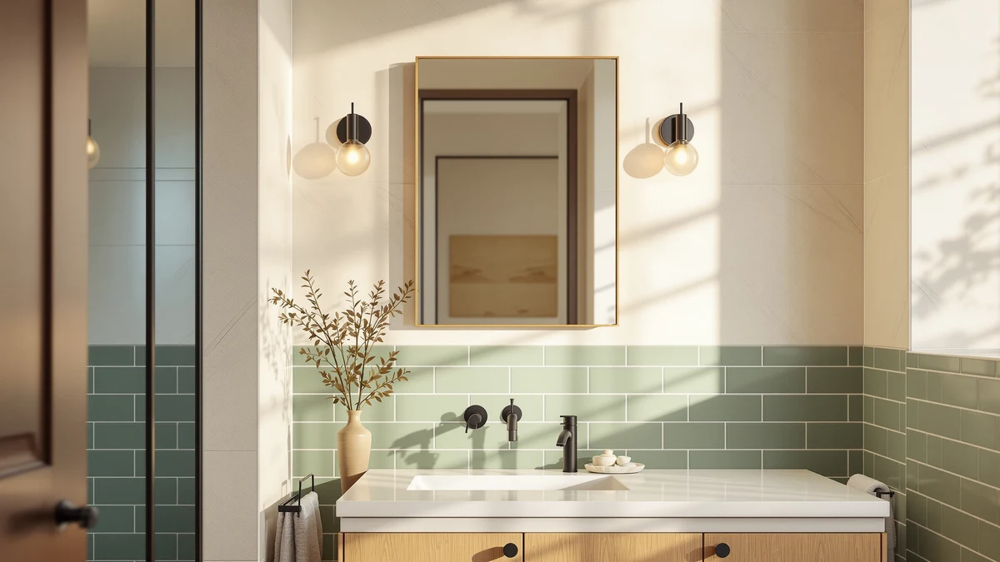

The Best Anti-fog Medicine Cabinets (2026)
Prices and picks verified as of August 2026. Independent, reader-supported reviews.


Quick Answer
The Hivone 40X32 LED Bathroom Mirror is our top pick among the best anti-fog medicine cabinets and mirrors we compared, thanks to its large tempered-glass panel and aluminum frame. If you want the same anti-fog function for less, the Sweetcrispy 24x36 Smart Anti-Fog LED at $60.14 delivers reliable performance at under a third of the price.
Our pick: Hivone 40X32 LED Bathroom Mirror — $179.99 Check Price on Amazon
Bottom line: our top pick is the Hivone 40X32 LED Bathroom Mirror with Lights at $145.99. The best budget option is the Sweetcrispy 28 Inch Round LED Bathroom Mirror with Lights at $49.87.
Things to Know Before You Buy
- Anti-fog LED mirrors are not the same as hinged medicine cabinets. Every mirror in this guide mounts flat to the wall like a standard bathroom mirror; none of them open to reveal shelving. If you specifically need storage behind the mirror, look at a mirrored cabinet instead.
- The defogger works through heat, not a coating. A thin heating element sits behind a section of the glass and keeps that area a few degrees above the room's dew point, which is what actually prevents condensation from forming.
- Size should match your vanity, not just your wall space. The mirrors compared here range from a 28-inch round model to a 55-inch double-vanity option, so measure your vanity width before you buy rather than assuming bigger is always better.
- Tempered glass and an aluminum frame are the baseline. Every mirror in this comparison uses tempered glass with an aluminum frame, which resists the humidity and temperature swings of daily bathroom use better than a wood-backed frame.
- Dimmable LED lighting matters as much as the anti-fog feature. A defogged mirror under one harsh light is still hard to use for shaving or makeup, so look for a model that lets you adjust brightness and color temperature.
Finding the best anti-fog medicine cabinets and LED mirrors for a steamy bathroom comes down to one test: does the glass clear on its own after a hot shower, or do you reach for a towel every morning? The seven picks in this guide are full-size LED wall mirrors, not hinged storage cabinets, and each one tackles fog the way modern lighted medicine cabinets do, with a defogger pad or heating element behind the glass that keeps the surface above the dew point while you shave, do skincare, or get ready for work. Add dimmable LED lighting around the frame and you get brighter, more even light than the single bulb most older medicine cabinets ship with.
We compared specs, verified current pricing, and owner reviews across these anti-fog mirrors rather than ranking them on marketing copy alone. Ilane Tall has covered bathroom hardware and lighting for this site's network for several years, and for this guide we focused on models that pair a genuine anti-fog function, tempered glass, and an aluminum frame with pricing that stays reasonable for a mirror you look at every day.
For most bathrooms, the Hivone 40X32 LED Bathroom Mirror ($179.99) is the pick worth the extra cost: its larger format suits a double vanity or a wide single sink, and its aluminum-framed tempered glass holds up to daily condensation better than thinner alternatives. If you want the same anti-fog function at a lower price, the Delma LED Bathroom Mirror ($134.99) is the closest runner-up, and the Sweetcrispy 24x36 Smart Anti-Fog LED ($60.14) is the value pick if your bathroom does not need a mirror over 30 inches wide.
Why You Should Trust Us
Ilane Tall has covered bathroom mirrors, lighting, and medicine cabinets for this site's network for several years, focusing on how these products perform once mounted in a real bathroom rather than how they look in a product photo. For this guide, we compared publicly listed specs, current Amazon pricing, and verified owner reviews for each of the seven anti-fog medicine cabinet alternatives and mirrors above. We do not accept payment from manufacturers to appear in this guide, and every price listed reflects what we found at the time of publishing. We disclose our Amazon affiliate relationship on every page.
How We Picked
We started from the top-selling anti-fog LED mirrors and medicine cabinet alternatives on Amazon and narrowed the list with a few hard filters. We removed listings with vague or unverifiable anti-fog claims, since a real claim needs a heating element or defogger pad rather than just marketing language, models priced above $250 where a true built-in medicine cabinet with the same feature makes more sense, and any listing missing basic specs like frame material or dimensions. That left the seven models compared in this guide to the best anti-fog medicine cabinets and mirrors currently available on Amazon, spanning a round 28-inch mirror up to a 55-inch double-vanity size.
How We Compared
We compared these anti-fog mirrors side by side on the facts that are verifiable without owning every unit: listed price, frame material, panel size, and how each one holds up once it's mounted and living with daily condensation. A pattern shows up across the reviews: the anti-fog pad works best when a mirror is mounted away from direct shower spray, since the heating element clears condensation rather than repelling water outright. We also checked owner feedback for recurring complaints, such as touch controls that misfire with wet hands or a defogged zone that only covers part of the glass.
Where two mirrors shared nearly identical specs, we weighed price and the plausibility of the listed size for a typical vanity above everything else, since a size running an inch or two off from what is advertised is a common complaint across this category of anti-fog medicine cabinets and mirrors, based on the reviews we read.
Our Picks
These are the seven models that made the cut in our search for the best anti-fog medicine cabinets and mirrors, ordered from our overall top pick to the more specialized budget and shape-specific options below.

Hivone 40X32 LED Bathroom Mirror
What we like
- 32 x 40 inch panel covers a double-sink vanity without needing two separate mirrors
- Tempered glass and an aluminum frame hold up to daily humidity better than wood-backed alternatives
- Dimmable LED lighting wraps the frame instead of relying on a single overhead fixture
Flaws but not dealbreakers
- At 40 inches wide, it needs a solid stretch of open wall, which rules out narrower vanities
- The largest mirror in this guide, so it also carries the highest price of the seven
| Material | Tempered glass + aluminum |
| Size | 32"L x 40"W |
The Hivone earns the Our Pick spot mainly on size and build. At 32 by 40 inches, it is large enough to serve a double vanity on its own, which saves you from buying and aligning two separate mirrors. The frame pairs tempered glass with aluminum, a combination that resists the temperature swings and daily condensation of a bathroom better than the wood or MDF backing found on cheaper anti-fog mirrors.
Buyers say the anti-fog function clears the glass within a few minutes of switching it on before a shower, and the dimmable LED perimeter gives you enough range to go from a soft evening glow to a brighter setting for close-up grooming. The main tradeoff is footprint: at 40 inches wide, you need a clear, open stretch of wall, so measure before you buy if a backsplash or sconces sit close to the mirror's intended spot.

Delma LED Bathroom Mirror with
What we like
- Matches the Hivone on frame material (tempered glass and aluminum) at a lower price
- Wide panel suits a long vanity counter or double sink
- LED lighting runs around the full frame rather than a single strip
Flaws but not dealbreakers
- Some buyers say the touch controls are less responsive with wet fingers than higher-priced models
- Still a large piece of glass to mount alone; a second person makes installation easier
| Material | Tempered glass + aluminum |
| Size | 30"L x 55"W |
The Delma sits just below the Hivone in size and specs, and it costs $45 less, which is why it lands as our runner-up. It uses the same tempered glass and aluminum frame combination, so daily humidity and temperature changes should not be a bigger concern here than with the top pick.
The anti-fog pad performs comparably to pricier options by most accounts, clearing the glass within a similar window after a hot shower. The main difference is the touch sensor: a handful of buyers describe it as less forgiving when your hands are wet. If that is not a dealbreaker for you, the Delma is the more budget-friendly way to get a large-format anti-fog mirror.

Sweetcrispy 24"x36" Smart Anti-Fog LED
What we like
- Priced under $65, the least expensive full-size anti-fog LED mirror we compared
- 24.5 x 36 inch panel fits a standard single-sink vanity
- The "Smart" branding reflects touch-based lighting controls rather than a hidden storage compartment
Flaws but not dealbreakers
- Smaller surface area than the Hivone or Delma, so it will not stretch across a double vanity
- At this price point, expect a lighter-gauge aluminum frame than the pricier picks
| Material | Tempered glass + aluminum |
| Size | 24.5"L x 36"W |
The Sweetcrispy Smart Anti-Fog is the value play in this guide. It uses the same tempered glass and aluminum frame formula as the pricier picks, at roughly a third of the Hivone's price, which makes it the mirror to choose if your bathroom needs a single-sink size rather than a double-vanity spread.
By most accounts, the anti-fog pad and touch-based LED controls work as advertised on a standard 24 by 36 inch mirror, and buyers frequently cite the price as the main reason they chose it over larger, costlier options. The tradeoff is scale: this mirror will not cover a wide double vanity the way the Hivone or Delma will, so measure your counter before assuming the smaller size will look right on the wall.

VanPokins LED Bathroom Mirror 24x32
What we like
- 24 x 32 inch size fits smaller vanities and powder rooms where larger mirrors will not
- Tempered glass and aluminum frame match the build quality of the pricier picks
- Priced under $75, making it an easy add for a single bathroom
Flaws but not dealbreakers
- Smallest usable surface among the rectangular mirrors in this guide besides the round Sweetcrispy
- Not the right choice if you specifically need a mirror over 30 inches wide
| Material | Tempered glass + aluminum |
| Size | 32"L x 24"W |
The VanPokins is our budget pick for a specific reason: it is sized for smaller bathrooms rather than trying to compete on scale with the Hivone or Delma. At 24 by 32 inches, it suits a single vanity in a guest bathroom or powder room where a 40-inch mirror would look oversized.
The frame and glass match the tempered glass and aluminum construction used across this guide, so you are not sacrificing build quality for the smaller footprint. The anti-fog function holds up well for its size class according to the reviews, and at under $75, it is one of the easier upgrades to justify if your current mirror has no lighting or defogging at all.

TRAHOME 36"x24" LED Bathroom Vanity
What we like
- 36 x 24 inch orientation gives you more width than height, useful over a long, low vanity
- Mid-range price puts it between the budget and premium picks in this guide
- Same tempered glass and aluminum build as the rest of the lineup
Flaws but not dealbreakers
- At 24 inches tall, it may sit lower than expected if you are used to a taller mirror
- Not the cheapest option if width is your only priority; the VanPokins costs less
| Material | Tempered glass + aluminum |
| Size | 36"L x 24"W |
The TRAHOME flips the usual proportions: at 36 inches wide and 24 inches tall, it is oriented horizontally rather than vertically. That makes it a better fit for a long, low vanity backsplash where a taller mirror would either overlap a light fixture or leave awkward gaps.
Build quality follows the same formula as the rest of this guide: tempered glass, an aluminum frame, and an anti-fog pad behind the glass. It works well as a stand-alone mirror over a single wide sink by most accounts, though if you specifically want maximum height for a tall household, the vertical VanPokins or Sweetcrispy will suit you better.

Sweetcrispy 28 Inch Round LED
What we like
- Lowest price in this guide at under $50
- 28-inch round shape works well over a pedestal sink or in a powder room
- Same tempered glass and anti-fog construction as the rectangular picks
Flaws but not dealbreakers
- Round shape has less usable width at eye level than a rectangular mirror of a similar price
- Not a fit for a double vanity or a wide single sink
| Material | Tempered glass + aluminum |
| Size | 28"L x 28"W |
This second Sweetcrispy is the only round mirror in the guide, and at under $48, it is also the cheapest. The 28-inch diameter suits a pedestal sink or a compact single vanity where a rectangular mirror would look out of proportion with the sink below it.
It keeps the same tempered glass and anti-fog pad found on the rest of the lineup, so the round shape is a style choice rather than a downgrade in build. The round format is harder to fill wall space with in a larger bathroom, several reviews point out, so this pick makes the most sense in a smaller or half bath rather than a primary bathroom with a wide vanity.

55"x30" LED Bathroom Mirror with
What we like
- At 55 inches wide, it is the widest mirror in this comparison
- Suits a long double-vanity counter that would otherwise need two separate mirrors
- Tempered glass and aluminum frame match the build standard of the rest of the lineup
Flaws but not dealbreakers
- Priced close to the Hivone despite being a different brand than our top pick
- A mirror this wide needs secure wall anchoring; check your wall material before buying
| Material | Tempered glass + aluminum |
| Size | 55"L x 30"W |
The MYSUNORIA is the widest mirror in this guide at 55 inches, which makes it a direct alternative to the Hivone for anyone with a long double-vanity counter. At 30 inches tall, it is slightly shorter than the Hivone's 32-inch height, so it suits a lower ceiling or a vanity with less clearance above the counter.
Construction follows the same tempered glass and aluminum frame approach used throughout this guide, and buyers say the anti-fog pad performs consistently across the full width rather than only clearing the center of the glass. Given the size, plan for secure wall anchoring, since a 55-inch mirror puts more load on your mounting hardware than the smaller picks in this comparison.
Quick Comparison
Here is how the seven anti-fog medicine cabinets and mirrors from this guide stack up on material, price, and best use case.
| Product | Material | Price | Rating | Best for | Get it |
|---|---|---|---|---|---|
| Hivone 40X32 LED Bathroom Mirror | Tempered glass + aluminum | $179.99 | 4 | Double vanities | View on Amazon → |
| Delma LED Bathroom Mirror with | Tempered glass + aluminum | $134.99 | 4 | Budget-minded double vanities | View on Amazon → |
| Sweetcrispy 24"x36" Smart Anti-Fog LED | Tempered glass + aluminum | $60.14 | 4 | Budget single-sink vanities | View on Amazon → |
| VanPokins LED Bathroom Mirror 24x32 | Tempered glass + aluminum | $74.99 | 4 | Small bathrooms and powder rooms | View on Amazon → |
| TRAHOME 36"x24" LED Bathroom Vanity | Tempered glass + aluminum | $99.99 | 4 | Wide, low vanities | View on Amazon → |
| Sweetcrispy 28 Inch Round LED | Tempered glass + aluminum | $47.83 | 4 | Pedestal sinks and powder rooms | View on Amazon → |
| 55"x30" LED Bathroom Mirror with | Tempered glass + aluminum | $155.99 | 4 | Long double-vanity counters | View on Amazon → |
Are these anti-fog medicine cabinets or just mirrors?
They are full-size LED mirrors, not hinged medicine cabinets with storage behind the glass.
How does the anti-fog feature actually work?
A low-wattage heating element or defogger pad sits behind a section of the tempered glass and keeps that area warm enough to stay above the bathroom's dew point, which prevents condensation from forming in the first place.